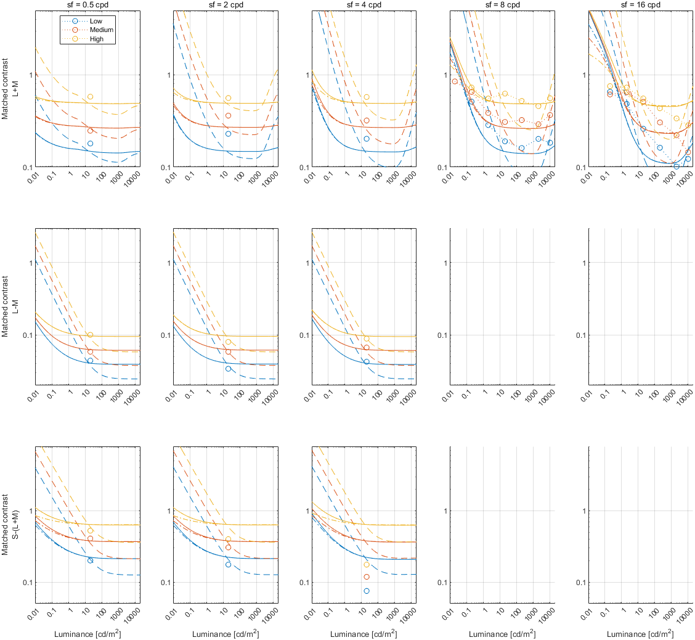

Default SCMF models
Fitting error
Legend
To keep the plots legible, only up to 3 models are plotted.
↸Dataset: [hdr_matching_young] Ashraf et al., 2022
SCMF across luminance levels (ref level: 200 nits, fixed cycles, lambda: 0.5)

SCMF across luminance levels (ref level: 20 nits, fixed cycles, lambda: 0.5)

SCMF across luminance levels (ref level: 20 nits, fixed cycles, lambda: 1)

↸Dataset: [georgeson1975] Georgeoson & Sullivan, 1975
SCMF across spatial frequencies (ref sf: 5 cpd)
↸Dataset: [georgeson1975_lum] Georgeoson & Sullivan, 1975
SCMF across photopic (10 cd/m^2) reference and scotopic (0.001585 cd/m^2) test stimulus at 2 cpd
SCMF (G contrast scale) across photopic (10 cd/m^2) reference and scotopic (0.001585 cd/m^2) test stimulus at 2 cpd
↸Dataset: [kulikowski1976_lum] Kulikowski, 1976
SCMF across test photopic (10 cd/m^2) stimulus and scotopic luminance reference stimuli at 5 cpd
SCMF (G contrast scale) across test photopic (10 cd/m^2) stimulus and scotopic luminance reference stimuli at 5 cpd